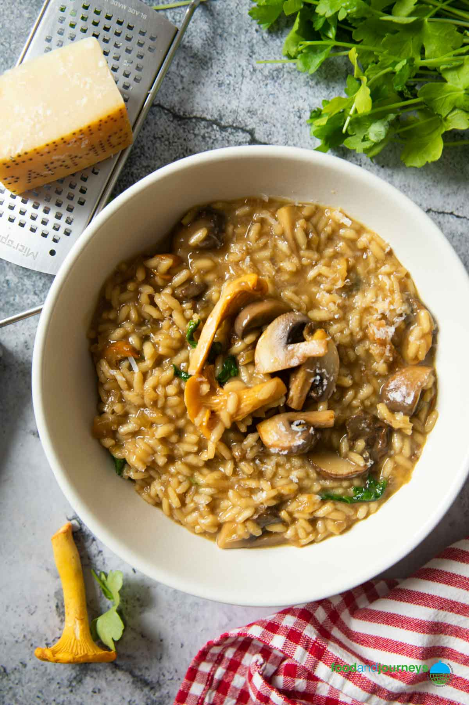

RISOTTO AI FUNGHI

The risotto is one of the main dishes of my hometown's cuisine, Milano! Nothing better then this for a cold winter day.
WHAT YOU NEED
- 400 grams of Carnaroli rice
- 1 onion
- 1 clove of garlic
- 1.5 litres of chicken stock
- 200 ml of white wine
- 500 grams of the mushroom of your choice
- 200 grams of butter
- 150 grams of Parmigiano Reggiano cheese
- Salt and pepper to taste
These amounts will feed 4 people
WHAT YOU DO
-
In a pot, Start by bringing the stock to a simmer. Chop the onion, the garlic and the mushrooms to your desire.
-
In a separate pot on medium heat, add a third of your butter and when it's sizzling, add your chopped onion to sauté. When the onion it's done, add the garlic, being careful not to burn it.
-
When you have reached a good browning on both the onion and the garlic, add the mushroom and let them give out all their moisture, so that they can brow in the pot.
-
When the mushrooms are cooked, add your rice and let it toast in the butter for a minute or so, always stirring. Then add your wine and deglaze until the alcohol has evaporated.
-
Now it's time to add your broth! With a ladle, add just enough so you cover the rice and be sure that you liquid is boiling. This is a crucial step, because the hot temperature will release the starch in the rice and create the wonderful creamy consistency of a Milanese risotto.
-
As the rice absorbes the stock, keep adding it the pot until the rice is cooked. This will take 12 minutes give or take. In the mean time, grate your Parmigiano and cube your remaining butter
-
When the rice is done, kill the heat and add your Parmigiano and butter while stirring, and your risotto is ready! Enjoy!
BACK TO THE HOMEPAGE